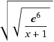

RIES - Find Algebraic Equations, Given Their Solution
First page . . . Back to page 2 . . . Forward to page 4 . . . Last page (page 6)
Nerdy Math Tricks
Here are a few cute and/or fun things you can do with ries:
Classical Approximations
The --min-match-distance option tells ries to not report any match unless it is at least a certain distance from the target. This can be used to find approximations to known values without hitting on the exact formula — like an approximation to π.
Combine this with the -N option to avoid using modern functions like sine and logarithm, and you get "classical" approximations. For example, try this command from the ries manual:
ries 3.141592653589 -NpSCTlLeEv^ --min-match-distance 1e-10 Using minimum match distance: 1e-10 Your target value: T = 3.141592653589 mrob.com/ries x-3 = 1/6 for x = T + 0.025074 {60} x-3 = 1/7 for x = T + 0.00126449 {60} sqrt(x-3) = 3/8 for x = T - 0.000967654 {83} x+sqrt(phi) = sqrt(2)+3 for x = T + 0.000601259 {87} 1/(x-3) = 5 sqrt(2) for x = T - 0.000171297 {85} x/phi^2 = 1/5+1 for x = T + 4.81329e-05 {85} (x+1) sqrt(2) = 6-1/7 for x = T + 3.27791e-05 {103} x^2-x = 8-sqrt(phi) for x = T - 5.94282e-06 {95} 1/(x-3)+1 = sqrt(8^2+1) for x = T + 5.12373e-06 {107} (x^2-8)^2 = sqrt(sqrt(5))+2 for x = T - 3.0576e-06 {109} 1/(x-3)-1 = 1/4^2+6 for x = T + 2.66765e-07 {111} (sqrt(x)-1/3)^2 = 5/(sqrt(2)+1) for x = T - 6.4329e-08 {118} x-sqrt(3*7) = sqrt(5)/4-2 for x = T + 3.57418e-08 {131}The output starts with x=19/6 and x=22/7, the two most common simple fraction approximations for π.
A little bit further is 1/(x-3) = 5 sqrt(2), which turns into thenifty approximation 3+√1/50 = 3+√2/10 = 3.14142135... You can also spot two others that contain "(x-3)" on the left-hand-side:1/(x-3)+1 = sqrt(8^2+1) and 1/(x-3)-1 = 1/4^2+6, both of whichwill solve to x = 3 + something.... The second of these is also equivalent to 355/113=3.14159292..., an excellent simple fraction approximant to π.
Fans of the Golden ratio will like x/phi^2 = 1/5+1 which gives6Φ2/5 = 3.1416407... We also get (x2-8)2=sqrt(√5)+2, which if you solve for x turns into the nested radical approximation:
 = 3.14158959... = π - 3.057×10-6
= 3.14158959... = π - 3.057×10-6
for related (and more devious) tricks see below...
Mystical Pre-Destiny
Take your phone number and a friend's phone number and insert a decimal point: 123-4567 becomes 123.4567 and 555-1212 becomes 555.1212. Then take the ratio: 555.1212/123.4567 = 4.496485. Put this into ries and pick a formula that can be solved for x (for example, I used x+9√π=6-1/e). Solve it for x (in this case getting x=6-1/e-9√π), and then multiply the whole thing by the phone number that you originally put in the denominator and you get the other phone number:
(6 - 1/e - 9√π) × 123.4567 = 555.121234525
If the answer doesn't have all 7 digits, try another of the formulas that ries gave. If you don't find a nice formula, start with something else, like 5.551212+1.234567 or 5.551212-1.234567, and transform the result in the appropriate way.
Now go to your friend and announce that you have found the mystic formula that links their phone number to yours. For extra credit, write the formula in an old school notebook and claim it was given as a problem in class long before you met.
Four Fours
At one time this type of problem was popular: How do you reach various values using four 4's and any number of symbols (for example: 44/44 = 1, 4/4+4/4 = 2, (4+4+4)/4 = 3, etc.). Solutions of a similar type of problem can be found with the --numeric-anagram option:
ries '-S+-*/' --numeric-anagram 4444 -Ox 17
| x = 4*4+4/4 ('exact' match) |
giving the solution 4×4+4/4 = 17. The -S+-*/option specifies the "symbols" that can be used in solutions, and the quotes around it prevent the shell from performing filename globbing. --numeric-anagram 4444 specifies that up to four 4's can be used insolutions (however fewer is allowed). -Ox tells ries that xshould only appear once in each equation. Although the 17 example and some others happen to have four 4's, solutions with fewer might be found:
ries '-S+-*/' --numeric-anagram 4444 -Ox 5
| x = 4/4+4 ('exact' match) |
Secret Code
Convert letters to numbers, generate an equation with ries, convert to an expression, then transmit to your friends. They use a calculator as the "secret decoder ring". Not very efficient, but pretty darn obscure.
Example: Convert "D A V E" to numbers (D=04, A=01, V=22, E=05). Make this to a single number (4.012205). Since we want to match all the digits and we don't care what digits come after that, use the option --mad which is short for --match-all-digits. We'll also use -NSCT to avoid trigonometric functions. Typing ries 4.012205 --mad -NSCT gives a few answers including theequation sqrt(x^2-5) = 4√π+2 Solving for x givesx=sqrt(5+(sqrt(sqrt(π))+2)^2). The value is 4.01 22 05 79... which has the needed encoding of "DAVE".
If your friend's calculator does not have a π key or other scientific functions, exclude more things with the -N option, forexample, ries 4.012205 --mad -NSCTplLfveE^.
Area 51
Sadly, as I mentioned in the history of RIES, a lot of the reason for ries's existence is to answer the frequent emails I get from... let's call them "dreamers". These are the folks who are obsessed with finding the mathematical equivalent of the mythical Fountain of Youth, a closed-form expression (using elementary functions) for some mysterious thing in the universe. The quintessential example is the Sommerfeld fine-structure constant. In an earlier age the biggest problem was claims of squaring the circle, akin to a claim that π is constructible.
When I get an email from one of these folks I usually invoke a ries command like this:
ries -l5 --try-solve-for-x --mad 137.03599907
which happily reports "x = (1/ln((sqrt(4-sqrt(e))+2)/3))^e". If wewish to keep the aliens away, we could broadcast this formula into space, and they'd think we're not advanced enough to be ready for interstellar contact.
A Visit by Dr. Matrix
Scientific American maths columnist Martin Gardner often referred to novel ideas and fringe theories attributed to a Dr. Matrix, usually with humorous intent. Perhaps the best known example was Ramanujan's constant, which "Doctor Matrix" claimed to be an integer. We can use ries (perhaps in an April Fool's stunt) to put forth similar claims.
For example, try the command
ries 3.141592653589 -NpSCT -l5
which simply tells ries to find approximations for π without using π itself or the trigonometric functions. Look at the results and pick one you like, then turn it around into something you can type on a calculator. I like 1/(x-3)-1/2 = e sqrt(2)+e because itcontains "x-3" which means that when you solve for x the formulawill start with "x = 3 + ...". Then blog or text to your friends:
My friend Irving said to try this on my TI-89: 3+2/(1+e×(2+√8)). What do you get?
The Return of Dr. Matrix
For a little more sophistication, try the command:
ries 3.141592653589 --min-match-distance 1e-8 -NSCT
This tells ries to find formulas for π so long as the solution isn't within 10-8 of your given value, and excluding the trig functions but allowing π itself. Since π is not excluded as a symbol, this gives us formulas for π that use π as part of the formula, but a direct approach like x=π is not allowed because we gave the --min-match-distance option.
Among the output of this example are the equations x√π+1 = e3/π and x2/e3 = 1/√1+pi. By substituting x for any π's in the formula and rearranging to get just one x on the left-hand side, both of these can be made into:
x=(e6/(x+1))(1/4)
If iterated with any starting value for x, this happens to converge (but it does not converge on π). Use it in a joke blog article:
Dr. Matrix visited me early last April. He claimed to have found an interesting converging iterative formula. Start with any value for x, such as 17 (the doctor's favourite number). Then calculate the value of the formula

Use the result as a new value for x, and repeat. Dr. Matrix told me that if I continue this process several more times, I would get a recognisable result. He plans to publish a proof of this remarkable formula in the Annals of Improbable Research later this year.
I tried this out, using my trusty SR-50 scientific calculator. Starting with 17 in the place of x in the formula, add 1, hit the = sign (18: so far, so good), then use the 1/x key to get the reciprocal, and multiply this by e6 (using the ex key). Then press the √x (square root) key twice. I get:
5.603177687
Using this new value in the place of x, repeat the formula again, and so on:
2.175823167
3.357203326
3.101985520
3.149148874
You might want to try this yourself. The digits eventually settle down and should be familiar to most veteran readers. What is going on here?
The same equations are also equivalent to
x4 + x5 = e6
which hints at the near-equality π4 + π5 ≈ e6 (see 403.428775... on my numbers pages).
First page . . . Back to page 2 . . . Forward to page 4 . . . Last page (page 6)
Contents: ries overview Benchmarks History Nerdy Math Tricks Semiserious Math Tricks Links and miscellaneous
 s.11
s.11